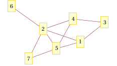
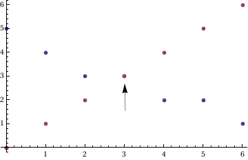
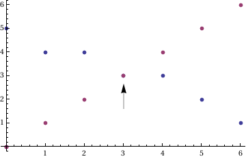

我们来证明对一个图G以及它的补图G′进行染色, 两张图的染色数之和小于图G的阶加1. 也就是说, 对于一张完全图K, 需要使用n = |K|种颜色进行染色, 而无论如何选取K的一个子图, 剩下的边形成的图与这张子图染色数之和最多只需要额外多一种颜色.
命题: χ(G)+χ(G′) ≤ n(G)+1
对于图G, 我们将顶点度数从大到小排序, 然后对顶点逐个染色. 显然这样的染色方法能够得到一个图的染色数至多为图中最大度数加1这样的结论. 更好一点的结论是
χ(G)≤maxmini(di, i)+1, i = 0, 1, ..., n(G)−1
其实, 后一结论能够直接得到我们所需要证明的命题. 因为对于一个图G和它的补图G′来说, 这两个值之和一定是不大于n(G)+1的. 如下图.

对于这样的一个图G, 我们画出顶点度数以及y = i这两个序列的图像:

我们发现, 这两个序列在(3,3)处有相交, 这个即是上面得到结论中的值, 即这个图可以用至多4种颜色进行着色. 我们发现, 其实将此图旋转180度, 得到的图像和G′的图像是一样的:

对于任意一个图G, 这个结论始终是成立的(实际上仔细考虑, 可能取得最大值的点不是同一个, 但是我们可以想象这两个值之和始终是不大于n(G)−1的. ) 这样, 我们就得到χ(G)+χ(G′) ≤ n(G)−1 + 1 + 1 = n(G)+1
来源: 图论考试